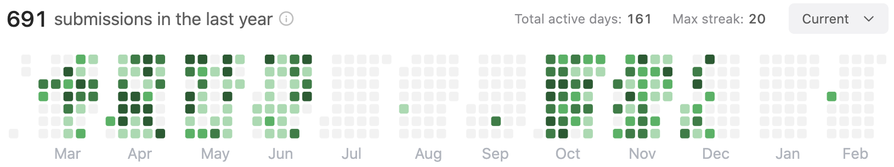

写在 2023 年初的后端社招面试经历（四年经验）：字节 米哈游 富途 猿辅导
目录
1. 背景
距离上一次面试已经过去快 3 年了，又碰上 2022 年互联网行业大动荡，很多企业都做出了裁员决定。身为互联网人要时刻关注自身成长，所以会对 “跟面试官切磋” 这种事情比较感兴趣，其实也是一种打探行情的手段：
- 3 年间自己的技术是线性成长、指数成长还是对数成长，跟同龄人相比如何？
- 当前求职是买方市场还是卖方市场？
因此收集这两个信息是我面试最初的目的，当然整个过程很长，最终的选择也会受很多事情影响。
2. 面试准备
毕业之后我在两家公司工作过，触及的业务包括营销数据分析、供应链物流、社媒广告投放等。每个领域包含的内容都比较多，除非是手上正在负责，其它内容想回忆起来是相当难的。因此在简历撰写上，尽量将业务转化为技术模型，好处在于：
- 让面试官能更多地从技术角度切入谈某项业务；
- 求职方向更灵活，没做过这项业务的面试官也有问题可问；
- 减少自己复习过往业务的时间（摆烂）。
正常来说简历准备好之后，要有具体的专业知识做支撑。考虑到工作年限不长，所以仍是以基础为准，对接触一线业务的后端来说计算机网络、数据库、操作系统三大块是一定绕不开的，在此之上搭建分布式、微服务架构、服务治理等知识框架。最后补充对工作项目的思考，例如做的项目在业界中是否有竞争对手、大家的方案横向对比有什么优劣点，自己的创新点在哪里等等。
但是面试准备是服务于我的面试目的的，基于评估自身技术水平的想法，我最终也没有拿起课本，而是决定看看在 “不刻意准备”（摆烂）的情况下能表达到什么程度。个人不认为裸面（again，摆烂）是个好的、值得推广的实践，这导致在面试的时候很多问题（例如：是否了解 Kafka、是否了解一致性哈希）我选择直接回答 “不会”、“没了解过” 来避免 follow up questions，但是在一些特殊背景下确实可以更真实反映出自身的水平。
当然，面试中有一些比较 “硬” 的条件要求（算法题咱说的就是你）是须要有所积累的。因为本身不擅长算法，解新题其实会需要一定的时间，所以我选择反复写 Top 100 Like 的老题目来保持手感。 
最后关于求职方向的选择，更多是出于个人偏好，不具备什么可参考性。对我来说，由于未来倾向于换到云原生相关的赛道，那自然是以基础架构相关的岗位为主。但是找到 100% 符合目标的职位其实是很难的，而且所谓的 “云原生”、“基础架构” 本身就是个非常大的范围，其中细分方向、职能无数。征询了一些朋友的意见，最后也是尽可能地往目标方向靠拢即可。
3. 面试
求职过程中，有一些公司是直接拒掉了简历的，一方面是简历比较普通，其次也可能确实没有招人的需求。这也是符合预期的，平时大家开发的时候 Liveness Probes 也会有失败，说明（简历）该回炉重造了。Anyways，最终进入面试流程的有 4 家，如果只对其中某一家感兴趣的话可以从导航目录直接跳过去。
在面试过程中我都会进行录音，这是个很有收益的事情，过往面试中我观察到有些同学会自认为回答得 “尚可”，殊不知很多细节只是在脑中形成思路，在表述上则是断断续续。任何细节的缺失在面试官听来都可能导致理解上的差异，最终予以不够好的评价。面试后听录音重新 Review 面试，可以从面试官的角度听自己的回答，也方便整理面试经历。
3.1 字节跳动（国际化电商）
字节的面试流程是组内面试官->组外面试官(交叉面)->组内面试官，当然因为菜的原因没继续走到第三面。两位面试官都很感兴趣所做的业务，聊业务的比重也是 4 家中最多的。另外字节的面试的时候有个小插曲，二面刚好是疫情爆发最严重的时候，顶着发烧面试也算是一次独特的经历吧。
详细记录：写在 2022 年末的字节跳动面试复盘
一面摘录
- 了解索引下推吗？什么情况下会下推到引擎去处理？
- 通过某个索引没办法按顺序地覆盖所有的查询条件，但是仍然可以利用索引内存在的字段（尽管不是有序的，需要扫描）去进一步过滤；
- 举例：idx(a,b,c,d)，查询条件为 a=? and b=? and d=?，发生下推减少回表数量；
- 什么场景下索引会失效？
- 场景有很多，但是如果我是一个引擎，我关注的不是什么情况会失效，而是走什么路径所花费的随机 I/O 和顺序 I/O 最少，如果走某个索引花费的随机 I/O 比从聚簇索引（顺序）查（成本）都还要高，那还不如直接去全表扫描；
- 典型例子：捞超过全表 30% 的数据；
- 有没有具体一点的例子？
- 还是刚刚提到的例子，比如说我要按照 update_time 去做范围查询，捞很多的数据，即使 update_time 有索引，也会选择全表扫描；
- WHERE id NOT IN (?, ?, ?) 会走索引吗？
- 还是要看成本；
- 举例：id 字段只包含 3 个值，1、2、3，3 只有几行，而 1、2 各有 100w 行，如果查询条件是 NOT IN (1, 2) 会走索引，如果查询条件是 NOT IN (3) 不会走索引。
反问环节
- 团队里面大约有多少个仓库、部署了多少服务（大致规模）？
- 这些项目会做单元测试吗，或者说平时的自测、代码质量保障是通过什么方式做的？
- 工具类的库会写单测；
- 自动化测试会由流量回放平台，QA 执行常用的用例；
- 整个流量回放都是 QA 负责的吗？
- 后端需要在代码里面做配合；
- 一个业务迭代版本是怎么安排时间发布的呢，比如说是每周固定发布还是说测试完成后的几天发布？
- 按双月来排期，产品拟定优先级， 研发扣除 oncall 等时间分配任务；
- oncall 那周安排多少时间精力做 oncall 和其它问题？
- 80% 时间在 oncall，剩下的时间会看情况修复一下线上和其他的小问题；
- 前面很多问题都没有答对，面试官的建议？
二面摘录
- 这种（短链接服务）场景里面写入（创建短链）耗时长可否容忍？
- 一定程度上是 OK 的因为创建短链的请求比访问短链的请求少很多，容忍度更高；
- 在这个大量 KV 数据读写的场景，为什么不考虑直接使用 KV 存储或者 Redis 来支撑？
- 考虑过，但是短链服务本质上更需要背后收集到的访问数据来体现业务价值，而访问数据的聚合分析需要数仓，公司内没有很好的 KV 存储到数仓的支持，不想当小白鼠；
- 为何不考虑数据仓库提供 HBase 来支持读写，节约掉 MySQL / KV 存储同步到数仓的过程？
- 嗯，好像是个可考虑的想法，但是不太了解 HBase；
- 能说一下 LevelDB 的存储结构吗？
- 内心：完了写上简历了但又没复习，啥都不记得了；
- 算法：定义 Redis 跳跃表的结构，再实现一版它的插入方法。
- 内心：orz。
反问
- 在字节的技术人对于公司的基础架构的满意程度如何？
- 该有的都有；
- 外出参加技术会议、交流在字节里机会是否丰富？
- 前面很多问题都没有答对，面试官的建议？
3.2 米哈游
整体来说面试问题都很基础和简单，能不能通过的话（如果没特意复习）就靠平时的积累了。Golang 岗位里对数据结构的提问非常频繁，个人认为对 map、sync.Map、context
等的熟悉程度应该达到能完整记忆每个结构体字段的水准。
详细记录：2023 年初的米哈游面试复盘
一面摘录
-
Go 里面使用 Map 时应注意问题和数据结构？
- 可以通过定义 value 为 struct 来节约内存；
- 哈希分桶的结构，用哈希值的高八位和低八位分别来做桶内定位的依据和分桶的依据等；
-
Map 扩容是怎么做的？
- 依照 Redis 渐进式 rehash 的思路说了一版；
-
Map 的 panic 能被 recover 掉吗？了解 panic 和 recover 的机制吗？
- 不懂，但是实际上是不可以的，具体原因可以看看 Map 并发读写的时候抛出的是什么，是不是普通的 panic；
-
Map 怎么知道自己处于竞争状态？是 Go 编码实现的还是底层硬件实现的？
- 通过结构体中的标记位实现的，可能是通过 CAS 操作的；
-
CAS 具体是怎么实现的呢？
-
并发使用 Map 除了加锁还有什么其他方案吗？
-
有对比过 sync.Map 和加锁的区别吗？
-
说一下（Redis）分布式锁的实现？
- setnx / 唯一 value / ttl
-
基于 Redis 的分布式锁会有什么问题？
- 主从模型下同步不保证一致会导致锁失效
-
Redis 分布式锁超时可以超时时间设长一点可以吗？不可以的话需要怎么解决？
- 不根本解决问题，可以考虑旁路的 goroutine 不断自旋续期
-
对 Redis 锁续期这个怎么实现呢？
-
日常在用的 Redis 集群都是什么架构？在主从模式和 Redis Cluster 中分布式锁会有什么问题？
反问
- Golang 在米哈游的使用场景？
- 项目组的一些细节，代码组织、管理形式等是怎样的？
- 项目质量的保障手段有哪些，单元测试覆盖率要求如何？
- 测试的同学主要以白盒测试还是黑盒测试为主？
- 前面很多问题都没有答对，面试官的建议？
3.3 富途牛牛（互联网-基础/接入）
4 家中富途牛牛问的基础知识是最多的，给我印象很深刻的是跟每位面试官的沟通都（提）很（示）顺（很）畅（多），那因为一些不熟悉的知识点我基本是依靠同类的工具去类比和猜想，面试官很愿意听我的这些猜想，有些思路上和所问的实现确实是不同的，面试官会提出来那（正确实现中）某某问题是如何（在我提出的实现中）解决的，引导我慢慢靠近或者推导出正确实现。
我认为作为面试官，这些应该是标配培训的能力，但是实际上在面试中能见到的甚少，一是面试时间有限，二是作为面试官一天面试很多人，耐心难免也会有消磨，这都是可以理解的。所以实际上能做到如此的话，对面试者确实会是非常好的体验。
详细记录：2023 年初的富途牛牛面试复盘
一面摘录
- 问一段代码输出结果？
func main() {
fmt.Println(test1())
fmt.Println(test2())
fmt.Println(test3())
fmt.Println(test4())
return
}
func test1() (v int) {
defer fmt.Println(v)
return v
}
func test2() (v int) {
defer func() {
fmt.Println(v)
}()
return 3
}
func test3() (v int) {
defer fmt.Println(v)
v = 3
return 4
}
func test4() (v int) {
defer func(n int) {
fmt.Println(n)
}(v)
return 5
}
- Golang 标准库中 map 的底层数据结构是什么样子的？
- Map 的查询时间复杂度如何分析？
- 极端情况下有很多哈希冲突，Golang 标准库如何去避免最坏的查询时间复杂度？
- Golang map Rehash 的策略是怎样的？什么时机会发生 Rehash？
- Rehash 具体会影响什么？哈希结果会受到什么影响？
- Rehash 过程中存放在旧桶的元素如何迁移？
- 并发环境共享同一个 map 是安全的吗？
- panic
- 如果并发环境想要用这种哈希容器有什么方案？
- sync.Mutex / sync.RWMutex
- sync.Map
- 加锁存在什么问题呢？
- sync.Map 比加锁的方案好在哪里，它的底层数据结构是怎样的？
- 缓存 + map 组成的结构
- 底层 map 的操作依然是加锁的，但是读的时候使用上缓存可以增加并发性能
- sync.Map 的 Load() 方法流程？
- sync.Map Store() 如何保持缓存层和底层 Map 数据是相同的? 是不是每次执行修改都需要去加锁？
- 或许是通过加锁和 CAS 保证的？（面试官：它下面还有一些 tricky 的思路，面试结束可以再去看看）
- channel 被 close 操作之后进行读和写会有什么问题？
- 未被初始化的 channel 进行读写会有什么问题？
- channel 底层数据结构是怎样的，尝试用结构体来表述一下？
反问
- 了解面试部门的基本情况？
- 部门内微服务的数量？每个研发大概会负责多少服务的开发工作？
- C++ 和 Golang 在团队内的使用场景和比例？
- 研发对开发质量的保障是如何完成的，测试和覆盖率是否有要求？
- 研发和测试的人员配置比例？
- 前面很多问题都没有答对，面试官的建议？
二面摘录
-
如果做一个翻译服务，翻译能力来自于供应商，如何从技术上对几家（A、B、C）供应商作出评估？
-
如果几家都要接入，且各家之间的翻译能力都各有优劣，那应该如何去搭建这个服务的框架？
- 调度器
- 数据采集 / 反馈机制，帮助调度器更好地工作
- 可扩展性，固化供应商的接入标准，方便未来扩展更多供应商选择
-
除了回答的这些方面，一个服务的设计还需要注意什么？
- 正常服务应该提供的网关，包括鉴权、限流、多租户
- 提供给外部的服务需要注意 SLA，SLA 则围绕日志、监控、Tracing 做文章
-
一副扑克牌中随机取 5 张，取到顺子的概率是多少？
- Hint 1：一种花色有多少种顺子？9 种
- Hint 2：一个顺子有 5 张牌，有多少种组合可能？4 ^ 5 种
- Hint 3：分子已经知道了，分母怎么表示，n 张取 m 张怎么表示？
反问
- 项目基本都是微服务 & Kubernetes 这套方案吗？
- 研发跟基础设施打交道能到什么样的深度，例如能使用 Kubernetes 的那些内容，中间件的使用权限上有什么样的管控？
- 正常业务的 CI/CD 里面都做了/集成了多少测试或检查？
- 业务的研发能在 Kubernetes 上具体写哪些东西呢，例如 sidecar、operator 等等？
- 有专门的团队去做，但是还在起步阶段，大家都可以贡献；
三面摘录
-
数据库迁移的原因是什么？
-
完成迁移之后 DB 成本降低多少？
-
迁移过程中双读双写具体是什么样的方案？
-
双写过程中只写成功了其中一个 DB，返回给用户报错，那是否会存在脏数据呢？
-
双读具体是什么方案，其中一个读成功了就返回还是要两个都读成功才可以？
-
HTTP 流量的录制工具主要是做什么用呢？
-
HTTP 流量录制会涉及到一些登陆态的处理吗？
-
掷骰子，游戏规则：希望结果尽可能大，如果对第一次的结果不满意可以掷第二次，但是第一次结果就作废了，以第二次的结果为准。这个掷骰子结果的数学期望是多少呢？
- Hint 1：如果第一次扔到 6，还考虑扔第二次吗？如果第一次扔到 1 考虑吗？
- Hint 2：那什么情况考虑扔第二次，什么情况不考虑？
-
输入两个整数 a 和 b，输出他们相除的结果，如果有循环小数用括号表示。如：
- a=-1，b=2，输出 “-0.5”
- a=1，b=3，输出 “0.(3)”
- a=10，b=80，输出 “0.125”
- a=-100，b=10，输出 “-10”
三面反问
- 一、二、三轮的面试官都是团队中的什么角色呢？
- 组织架构中小组、中心的概念和规模？
- 作为管理者如果看到团队中的技术氛围比较欠缺，会考虑什么样的手段（去提升）呢？
- 在已有组件能支撑业务的情况下，如何看待 Member 提出的一些组件的升级或引入呢？
- 对于 CI/CD 这块，可能不会直接产生业务影响（例如更高的订单量），在公司的现状如何，以及如何看待将时间投入在这上面呢？
- 前面很多问题都没有答对，面试官的建议？
3.4 猿辅导（大监控-日志）
其实最初有一点点惊讶原来猿辅导在国家一些政策影响下仍在继续活跃。由于投递的是更贴近基础设施的岗位，很多问题能听得出来都是从基础架构工程师的角度发问的。另外它们家的面试有一个比较印象深刻的点就是，每位面试官都喜欢问：“你觉得 XXXXX”，例如 “你觉得哪些项目挑战最大”、“你觉得这里面最难的点在哪里”。不过作为投递里面唯一完全没接触过的领域，他们问的很多问题我都非常有兴趣继续探讨下去，也是少有的关注简历上CDC同步方案的团队。
详细记录：2023 年初的猿辅导面试复盘
一面摘录
- 为什么存储要从 TiDB 迁移到 MySQL？
- 迁移过程中有遇到过什么问题或者有难度的挑战吗？
- 说下这些问题（双写一致性、迁移前后数据核对）怎么解决的吧？
- 设计不锁表、数据版本不回绕的数据迁移方案具体是要解决怎样的问题呢？
- 怎么理解可观测性（Observability）？
- Redis 有看过源码吗，贡献过什么 Feature？
- Redis 6 里面的 Threaded I/O 是想解决什么问题？
- 讲一下 WiscKey 论文，想解决的是什么场景问题？ KV 分离能解决写放大的问题吗？
写代码
- 一个有序数组，按某个位置进行旋转，如 [1,2,3,4,5] 变成 [3,4,5,1,2]，在这个旋转后的数组中查找给定值；
反问
- 部门里面目前在负责那些日志相关的事情，例如是要搭建日志平台，或者现有日志平台的运维方，还是负责使用方的接入？
- 现在日志的体量大约是多少 PB，每天有多少日志需要采集收录？
- 日志的采集现在是怎么做的呢？
- 职位 OnCall 的情况如何？
- 这个日志平台还未正式上线的话，以往业务团队是怎么查询的呢？
二面摘录
- 短链接唯一 ID 设计这块挑战是什么？
- 针对相同长链接，会生成相同的还是不同的短链接，（两种方案分别是）怎么实现的？
- 数据迁移的过程中遇到什么问题？
- 为什么要为这些业务设计 ClickHouse 的存储？OLAP 和离线数仓的差别在哪里？
- 讲一下 Trace 的数据模型，什么是 Span，Trace ID 和 Span ID 是怎么设计的？
- Metrics 的数据模型有了解吗？
- LSM-Tree 和 B+ Tree 的本质区别是什么呢？
- LSM-Tree 有很多实现，能不能用 B+ Tree 作为其中的一种方案呢？用 B+ Tree 代替原来的 SSTable 有什么好处呢？
写代码
- 用一个环形链表实现一个队列，新元素进入时可能需要扩容，但是不需要考虑缩容；
反问
- 面试的职位未来是专注日志方向的吗？
- 对可观测性 SaaS 平台的时间规划是怎样的，何时会希望推出产品，交付使用？
- 这套 SaaS 平台面向的用户是内部用户还是外部用户呢？
- 职位 Go 和 Java 都需要，Go 语言在团队里面是怎样发挥作用的呢，具体支撑哪些功能，平台还是底层实现？
三面摘录
- 数据库迁移，双写阶段有写入失败时怎样处理？
- 双写的几个阶段的目标分别是什么，某些阶段能不能省略不做？
- 还有其他项目觉得比较有挑战的吗？
- 讲解一下做过的可观测性方向的事情？
- 监控和 Trace 是怎么做联动的？
写代码
- 用两个栈对数据进行排序，例如第一个栈中当前有 [1,3,4,2,6,9,7]，第二个栈为 []，利用这两个数据结构把数据排序，尽可能少申请空间或者使用额外的数据结构；
反问
- 目前公司内可观测性，例如 Trace 和日志建设的完善程度如何？
- 部署架构中都用了哪些 Agent 来辅助可观测性信息的采集，各是做什么的？
- 除了 Kubernetes 还在用哪些容器调度管理的方案，没有能迁移的原因（想借此评估一下对统一可观测性架构设计的影响和难度）？
4. 总结
整体来说面试没有出现想象中的地狱难度，几乎所有的面试官都很有耐心交流。但是被问到这么多的基础问题确实有一点点出乎意料，正常以为会是项目 & 基础各占 50% 的比例。不过或许这也是好事情，个人非常赞同基础扎实但业务薄弱的工程师 > 对业务有不错理解但基础不扎实（或比较远离一线开发、代码生疏）的工程师。另外其实计算机基础确确实实有在我的日常开发中帮到过我（quick question：你有在实际工作、排查问题中找过 TIME_WAIT 的网络连接吗？）。
然后回到最初面试的目的，是为了回答下面两个问题：
- 3 年间自己的技术是线性成长、指数成长还是对数成长，跟同龄人相比如何？
是有成长的，但是没有那么理想，可能更介于线性成长和对数成长之间；
- 当前求职是买方市场还是卖方市场？
哈哈
5. 一些推荐
关于面试我认为下面的材料很大程度帮到过我，所以也会推荐给在看本文的你，或者要求职的同学。
USENIX：https://www.usenix.org/conferences
如果想树立一些属于自己的亮点，一个捷径是了解面试官不懂的知识~~（不是）~~。关心前沿的学术和工业论文非常简单有效，USENIX 上覆盖了很多基础方向，例如计算机网络、操作系统、存储、分布式、安全，以及按职能划分的 SRE 等等。除了 USENIX 上的以外，如果有你关注方向的其他顶会那当然也是可以的，例如我以前会去看看 VLDB 和 SIGMOD 上的论文了解 KV 存储的一些新知识和研究方向。
操作系统导论：https://book.douban.com/subject/33463930/
一本很有意思的操作系统的入门书，可以写写里面代码了解一下 Linux 的 API，对于进程和内存相关的讲解让我印象非常深刻。
Go程序员面试笔试宝典：https://book.douban.com/subject/35871233/
首先声明一点这个书没帮到我面试，因为在面试前我没什么时间看它…正常来说我也不会推荐这种速食读物（手动狗头），但是结合面试遇到的提问来看，我认为它会对急着在一两个月内找到工作的同学很帮助。不过无论如何，程序员的学习是不建议走捷径的，如果对 Golang 感兴趣的话，有很多更好的替代品，包括 Draveness 老师、Russ Cox 的博客等等。